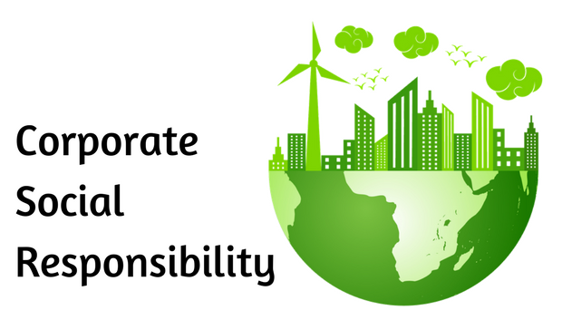

These actions can impact negatively on the development of the country. Therefore, CWM has taken the initiative to implement e-waste management that has been regularized by the CEA. We follow the “Triple Bottom Line” or 3BL concept that focuses on securing the planet and its people, for sustainability.
CWM Ltd is comprehensively integrated with CSR fundamentals in our operation. All business processes and production processes are aligned with CSR goals of the company. Being the single scientific WEEE recycler in Sri Lanka, CWM Ltd has developed excellent business models that integrate with waste management as part of our CSR models.
The leakage of personal data negatively influenced the society in Sri Lanka, which was the reason for many suicides. It is a critical issue in the digital world. There is more risk of this in the corporate sector. Such leakage of data might lead to the violation of the Personnel Data Protection Act , No 2022 of 9.
CWM eliminates the risk of data leakage by providing the data anode casting solution, which is a CSR initiative that is aligned with the business process.
E-waste generators (manufacturers, distributors & resellers), operators (users), destroyers (dismantlers / recyclers) of EEE & WEEE Recycling can meet CSR obligations towards society by managing their e-waste in a sustainable manner.
As a market leader of Sri Lanka’s e-waste management industry, CWM Ltd has developed excellent models for corporates and individuals to serve the environment, and achieve skill development and waste management segments as part of their corporate social responsibility (CSR) plans.